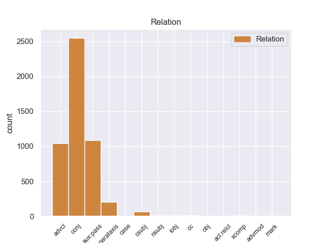
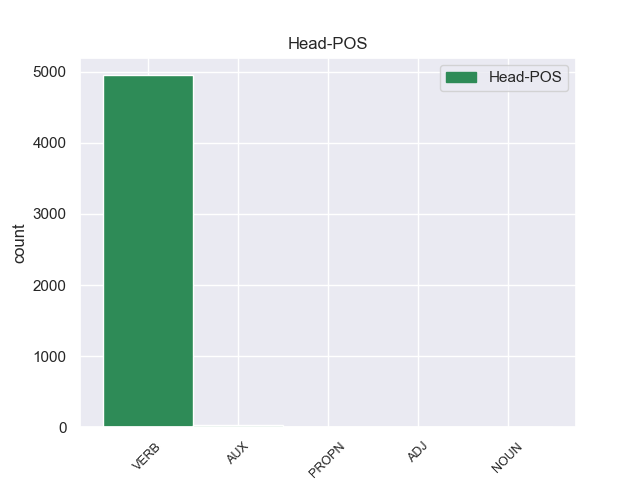
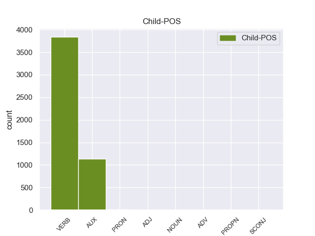

Distribution of features within this leaf



Agreement Rules sorted by frequency.
- When the dependent token is the conjunct(conj) of the head token,
1 Para _ _ _ _ 0 _ _ _
2 poder _ _ _ _ 0 _ _ _
3 estudiar _ _ _ _ 0 _ _ _
4 los _ _ _ _ 0 _ _ _
5 mejor _ _ _ _ 0 _ _ _
6 , _ _ _ _ 0 _ _ _
7 Ghazali _ _ _ _ 0 _ _ _
8 introdujo introdujar VERB _ Mood=Ind|Number=Sing|Person=3|Tense=Past|VerbForm=Fin 0 _ _ _
9 varios _ _ _ _ 0 _ _ _
10 peces _ _ _ _ 0 _ _ _
11 en _ _ _ _ 0 _ _ _
12 un _ _ _ _ 0 _ _ _
13 tanque _ _ _ _ 0 _ _ _
14 y _ _ _ _ 0 _ _ _
15 , _ _ _ _ 0 _ _ _
16 tras _ _ _ _ 0 _ _ _
17 varias _ _ _ _ 0 _ _ _
18 semanas _ _ _ _ 0 _ _ _
19 de _ _ _ _ 0 _ _ _
20 aclimatación _ _ _ _ 0 _ _ _
21 , _ _ _ _ 0 _ _ _
22 comenzó comenzar VERB _ Mood=Ind|Number=Sing|Person=3|Tense=Past|VerbForm=Fin 8 conj _ _
23 a _ _ _ _ 0 _ _ _
24 grabar _ _ _ _ 0 _ _ _
25 sus _ _ _ _ 0 _ _ _
26 sonidos _ _ _ _ 0 _ _ _
27 , _ _ _ _ 0 _ _ _
28 según _ _ _ _ 0 _ _ _
29 recoge _ _ _ _ 0 _ _ _
30 el _ _ _ _ 0 _ _ _
31 periódico _ _ _ _ 0 _ _ _
32 New _ _ _ _ 0 _ _ _
33 Zealand _ _ _ _ 0 _ _ _
34 Herald _ _ _ _ 0 _ _ _
35 . _ _ _ _ 0 _ _ _
1 En _ _ _ _ 0 _ _ _
2 estos _ _ _ _ 0 _ _ _
3 trabajos _ _ _ _ 0 _ _ _
4 se _ _ _ _ 0 _ _ _
5 pusieron _ _ _ _ 0 _ _ _
6 a _ _ _ _ 0 _ _ _
7 el _ _ _ _ 0 _ _ _
8 descubierto _ _ _ _ 0 _ _ _
9 25 _ _ _ _ 0 _ _ _
10 vanos _ _ _ _ 0 _ _ _
11 correspondientes _ _ _ _ 0 _ _ _
12 a _ _ _ _ 0 _ _ _
13 ventanas _ _ _ _ 0 _ _ _
14 saeteras _ _ _ _ 0 _ _ _
15 que _ _ _ _ 0 _ _ _
16 habían _ _ _ _ 0 _ _ _
17 sido ser AUX _ Gender=Masc|Number=Sing|Tense=Past|VerbForm=Part 18 aux:pass _ _
18 tapiadas tapiado VERB _ Gender=Masc|Number=Sing|Tense=Past|VerbForm=Part 0 _ _ _
19 en _ _ _ _ 0 _ _ _
20 los _ _ _ _ 0 _ _ _
21 siglos _ _ _ _ 0 _ _ _
22 anteriores _ _ _ _ 0 _ _ _
23 . _ _ _ _ 0 _ _ _
1 En _ _ _ _ 0 _ _ _
2 1991 _ _ _ _ 0 _ _ _
3 , _ _ _ _ 0 _ _ _
4 como _ _ _ _ 0 _ _ _
5 ya _ _ _ _ 0 _ _ _
6 está _ _ _ _ 0 _ _ _
7 indicado indicar VERB _ Gender=Masc|Number=Sing|Tense=Past|VerbForm=Part 14 advcl _ _
8 en _ _ _ _ 0 _ _ _
9 el _ _ _ _ 0 _ _ _
10 párrafo _ _ _ _ 0 _ _ _
11 anterior _ _ _ _ 0 _ _ _
12 , _ _ _ _ 0 _ _ _
13 se _ _ _ _ 0 _ _ _
14 creó crear VERB _ Mood=Ind|Number=Sing|Person=3|Tense=Past|VerbForm=Fin 0 _ _ _
15 un _ _ _ _ 0 _ _ _
16 equipo _ _ _ _ 0 _ _ _
17 ad _ _ _ _ 0 _ _ _
18 hoc _ _ _ _ 0 _ _ _
19 para _ _ _ _ 0 _ _ _
20 averiguar _ _ _ _ 0 _ _ _
21 como _ _ _ _ 0 _ _ _
22 se _ _ _ _ 0 _ _ _
23 podía _ _ _ _ 0 _ _ _
24 desarrollar _ _ _ _ 0 _ _ _
25 el _ _ _ _ 0 _ _ _
26 Dialogo _ _ _ _ 0 _ _ _
27 Social _ _ _ _ 0 _ _ _
28 , _ _ _ _ 0 _ _ _
29 este _ _ _ _ 0 _ _ _
30 equipo _ _ _ _ 0 _ _ _
31 estaba _ _ _ _ 0 _ _ _
32 formado _ _ _ _ 0 _ _ _
33 por _ _ _ _ 0 _ _ _
34 representantes _ _ _ _ 0 _ _ _
35 de _ _ _ _ 0 _ _ _
36 todas _ _ _ _ 0 _ _ _
37 las _ _ _ _ 0 _ _ _
38 organizaciones _ _ _ _ 0 _ _ _
39 relacionadas _ _ _ _ 0 _ _ _
40 con _ _ _ _ 0 _ _ _
41 CES _ _ _ _ 0 _ _ _
42 , _ _ _ _ 0 _ _ _
43 UNICE _ _ _ _ 0 _ _ _
44 y _ _ _ _ 0 _ _ _
45 CEEP _ _ _ _ 0 _ _ _
46 ; _ _ _ _ 0 _ _ _
1 En _ _ _ _ 0 _ _ _
2 total _ _ _ _ 0 _ _ _
3 pasó pasar VERB _ Mood=Ind|Number=Sing|Person=3|Tense=Past|VerbForm=Fin 0 _ _ _
4 veinte _ _ _ _ 0 _ _ _
5 años _ _ _ _ 0 _ _ _
6 dentro _ _ _ _ 0 _ _ _
7 de _ _ _ _ 0 _ _ _
8 las _ _ _ _ 0 _ _ _
9 cárceles _ _ _ _ 0 _ _ _
10 , _ _ _ _ 0 _ _ _
11 donde _ _ _ _ 0 _ _ _
12 un _ _ _ _ 0 _ _ _
13 par _ _ _ _ 0 _ _ _
14 de _ _ _ _ 0 _ _ _
15 veces _ _ _ _ 0 _ _ _
16 inició iniciar VERB _ Mood=Ind|Number=Sing|Person=3|Tense=Past|VerbForm=Fin 3 parataxis _ _
17 largas _ _ _ _ 0 _ _ _
18 huelgas _ _ _ _ 0 _ _ _
19 de _ _ _ _ 0 _ _ _
20 hambre _ _ _ _ 0 _ _ _
21 para _ _ _ _ 0 _ _ _
22 exigir _ _ _ _ 0 _ _ _
23 un _ _ _ _ 0 _ _ _
24 estatus _ _ _ _ 0 _ _ _
25 legal _ _ _ _ 0 _ _ _
26 claro _ _ _ _ 0 _ _ _
27 de _ _ _ _ 0 _ _ _
28 los _ _ _ _ 0 _ _ _
29 presos _ _ _ _ 0 _ _ _
30 políticos _ _ _ _ 0 _ _ _
31 . _ _ _ _ 0 _ _ _
1 Se _ _ _ _ 0 _ _ _
2 espera esperar VERB _ Mood=Ind|Number=Sing|Person=3|Tense=Pres|VerbForm=Fin 0 _ _ _
3 que _ _ _ _ 0 _ _ _
4 el _ _ _ _ 0 _ _ _
5 argentino _ _ _ _ 0 _ _ _
6 firme firme VERB _ Mood=Ind|Number=Sing|Person=3|Tense=Pres|VerbForm=Fin 2 csubj _ _
7 por _ _ _ _ 0 _ _ _
8 lo _ _ _ _ 0 _ _ _
9 menos _ _ _ _ 0 _ _ _
10 por _ _ _ _ 0 _ _ _
11 las _ _ _ _ 0 _ _ _
12 cuatro _ _ _ _ 0 _ _ _
13 temporadas _ _ _ _ 0 _ _ _
14 que _ _ _ _ 0 _ _ _
15 le _ _ _ _ 0 _ _ _
16 quedarían _ _ _ _ 0 _ _ _
17 de _ _ _ _ 0 _ _ _
18 fútbol _ _ _ _ 0 _ _ _
19 a _ _ _ _ 0 _ _ _
20 alto _ _ _ _ 0 _ _ _
21 nivel _ _ _ _ 0 _ _ _
22 . _ _ _ _ 0 _ _ _
1 El _ _ _ _ 0 _ _ _
2 entrenador _ _ _ _ 0 _ _ _
3 serbio _ _ _ _ 0 _ _ _
4 confía _ _ _ _ 0 _ _ _
5 en _ _ _ _ 0 _ _ _
6 el _ _ _ _ 0 _ _ _
7 jerezano _ _ _ _ 0 _ _ _
8 , _ _ _ _ 0 _ _ _
9 que _ _ _ _ 0 _ _ _
10 se _ _ _ _ 0 _ _ _
11 convierte _ _ _ _ 0 _ _ _
12 en _ _ _ _ 0 _ _ _
13 parte _ _ _ _ 0 _ _ _
14 fundamental _ _ _ _ 0 _ _ _
15 de _ _ _ _ 0 _ _ _
16 el _ _ _ _ 0 _ _ _
17 equipo _ _ _ _ 0 _ _ _
18 que _ _ _ _ 0 _ _ _
19 consigue _ _ _ _ 0 _ _ _
20 " _ _ _ _ 0 _ _ _
21 El _ _ _ _ 0 _ _ _
22 Doblete _ _ _ _ 0 _ _ _
23 " _ _ _ _ 0 _ _ _
24 , _ _ _ _ 0 _ _ _
25 es ser AUX _ Mood=Ind|Number=Sing|Person=3|Tense=Pres|VerbForm=Fin 29 cc _ _
26 decir _ _ _ _ 0 _ _ _
27 , _ _ _ _ 0 _ _ _
28 que _ _ _ _ 0 _ _ _
29 gana ganar VERB _ Mood=Ind|Number=Sing|Person=3|Tense=Pres|VerbForm=Fin 0 _ _ _
30 la _ _ _ _ 0 _ _ _
31 Liga _ _ _ _ 0 _ _ _
32 y _ _ _ _ 0 _ _ _
33 la _ _ _ _ 0 _ _ _
34 Copa _ _ _ _ 0 _ _ _
35 de _ _ _ _ 0 _ _ _
36 el _ _ _ _ 0 _ _ _
37 Rey _ _ _ _ 0 _ _ _
38 de _ _ _ _ 0 _ _ _
39 Fútbol _ _ _ _ 0 _ _ _
40 en _ _ _ _ 0 _ _ _
41 esa _ _ _ _ 0 _ _ _
42 misma _ _ _ _ 0 _ _ _
43 campaña _ _ _ _ 0 _ _ _
44 . _ _ _ _ 0 _ _ _
1 Este _ _ _ _ 0 _ _ _
2 sin _ _ _ _ 0 _ _ _
3 el _ _ _ _ 0 _ _ _
4 consentimiento _ _ _ _ 0 _ _ _
5 de _ _ _ _ 0 _ _ _
6 Manson _ _ _ _ 0 _ _ _
7 , _ _ _ _ 0 _ _ _
8 re rar VERB _ Mood=Ind|Number=Sing|Person=3|Tense=Past|VerbForm=Fin 10 iobj _ _
9 - _ _ _ _ 0 _ _ _
10 escribió escribiar VERB _ Mood=Ind|Number=Sing|Person=3|Tense=Past|VerbForm=Fin 0 _ _ _
11 la _ _ _ _ 0 _ _ _
12 canción _ _ _ _ 0 _ _ _
13 el _ _ _ _ 0 _ _ _
14 11 _ _ _ _ 0 _ _ _
15 de _ _ _ _ 0 _ _ _
16 septiembre _ _ _ _ 0 _ _ _
17 de _ _ _ _ 0 _ _ _
18 1968 _ _ _ _ 0 _ _ _
19 , _ _ _ _ 0 _ _ _
20 cambiando _ _ _ _ 0 _ _ _
21 algunas _ _ _ _ 0 _ _ _
22 cosas _ _ _ _ 0 _ _ _
23 de _ _ _ _ 0 _ _ _
24 la _ _ _ _ 0 _ _ _
25 lírica _ _ _ _ 0 _ _ _
26 de _ _ _ _ 0 _ _ _
27 el _ _ _ _ 0 _ _ _
28 tema _ _ _ _ 0 _ _ _
29 , _ _ _ _ 0 _ _ _
30 la _ _ _ _ 0 _ _ _
31 cantó _ _ _ _ 0 _ _ _
32 y _ _ _ _ 0 _ _ _
33 grabó _ _ _ _ 0 _ _ _
34 con _ _ _ _ 0 _ _ _
35 su _ _ _ _ 0 _ _ _
36 grupo _ _ _ _ 0 _ _ _
37 e _ _ _ _ 0 _ _ _
38 incluyó _ _ _ _ 0 _ _ _
39 en _ _ _ _ 0 _ _ _
40 el _ _ _ _ 0 _ _ _
41 álbum _ _ _ _ 0 _ _ _
42 20 _ _ _ _ 0 _ _ _
43 / _ _ _ _ 0 _ _ _
44 20 _ _ _ _ 0 _ _ _
45 de _ _ _ _ 0 _ _ _
46 el _ _ _ _ 0 _ _ _
47 año _ _ _ _ 0 _ _ _
48 1969 _ _ _ _ 0 _ _ _
49 . _ _ _ _ 0 _ _ _
1 El _ _ _ _ 0 _ _ _
2 primer _ _ _ _ 0 _ _ _
3 edil _ _ _ _ 0 _ _ _
4 encabezó _ _ _ _ 0 _ _ _
5 la _ _ _ _ 0 _ _ _
6 representación _ _ _ _ 0 _ _ _
7 consistorial _ _ _ _ 0 _ _ _
8 junto _ _ _ _ 0 _ _ _
9 a _ _ _ _ 0 _ _ _
10 otros _ _ _ _ 0 _ _ _
11 concejales _ _ _ _ 0 _ _ _
12 y _ _ _ _ 0 _ _ _
13 trabajadores _ _ _ _ 0 _ _ _
14 municipales _ _ _ _ 0 _ _ _
15 , _ _ _ _ 0 _ _ _
16 quienes quienes PRON _ Mood=Ind|Number=Plur|Person=3|Tense=Past|VerbForm=Fin 17 nsubj _ _
17 llevaron llevaror VERB _ Mood=Ind|Number=Plur|Person=3|Tense=Past|VerbForm=Fin 0 _ _ _
18 cestas _ _ _ _ 0 _ _ _
19 con _ _ _ _ 0 _ _ _
20 productos _ _ _ _ 0 _ _ _
21 de _ _ _ _ 0 _ _ _
22 el _ _ _ _ 0 _ _ _
23 campo _ _ _ _ 0 _ _ _
24 a _ _ _ _ 0 _ _ _
25 el _ _ _ _ 0 _ _ _
26 santo _ _ _ _ 0 _ _ _
27 patrón _ _ _ _ 0 _ _ _
28 . _ _ _ _ 0 _ _ _
1 Hizo hizar VERB _ Mood=Ind|Number=Sing|Person=3|Tense=Past|VerbForm=Fin 0 _ _ _
2 patente patente VERB _ Gender=Masc|Number=Sing|Tense=Past|VerbForm=Part 1 xcomp _ _
3 su _ _ _ _ 0 _ _ _
4 preocupación _ _ _ _ 0 _ _ _
5 por _ _ _ _ 0 _ _ _
6 la _ _ _ _ 0 _ _ _
7 eventual _ _ _ _ 0 _ _ _
8 pérdida _ _ _ _ 0 _ _ _
9 de _ _ _ _ 0 _ _ _
10 las _ _ _ _ 0 _ _ _
11 provincias _ _ _ _ 0 _ _ _
12 de _ _ _ _ 0 _ _ _
13 Texas _ _ _ _ 0 _ _ _
14 , _ _ _ _ 0 _ _ _
15 Nuevo _ _ _ _ 0 _ _ _
16 México _ _ _ _ 0 _ _ _
17 y _ _ _ _ 0 _ _ _
18 las _ _ _ _ 0 _ _ _
19 Californias _ _ _ _ 0 _ _ _
20 , _ _ _ _ 0 _ _ _
21 la _ _ _ _ 0 _ _ _
22 cual _ _ _ _ 0 _ _ _
23 sería _ _ _ _ 0 _ _ _
24 irreparable _ _ _ _ 0 _ _ _
25 . _ _ _ _ 0 _ _ _
1 Ya _ _ _ _ 0 _ _ _
2 existe _ _ _ _ 0 _ _ _
3 un _ _ _ _ 0 _ _ _
4 90 _ _ _ _ 0 _ _ _
5 % _ _ _ _ 0 _ _ _
6 de _ _ _ _ 0 _ _ _
7 avance _ _ _ _ 0 _ _ _
8 de _ _ _ _ 0 _ _ _
9 la _ _ _ _ 0 _ _ _
10 coalición _ _ _ _ 0 _ _ _
11 de _ _ _ _ 0 _ _ _
12 izquierda _ _ _ _ 0 _ _ _
13 para _ _ _ _ 0 _ _ _
14 la _ _ _ _ 0 _ _ _
15 gubernartura _ _ _ _ 0 _ _ _
16 de _ _ _ _ 0 _ _ _
17 Veracruz _ _ _ _ 0 _ _ _
18 , _ _ _ _ 0 _ _ _
19 dijeron _ _ _ _ 0 _ _ _
20 los _ _ _ _ 0 _ _ _
21 comisionados _ _ _ _ 0 _ _ _
22 de _ _ _ _ 0 _ _ _
23 el _ _ _ _ 0 _ _ _
24 Partido _ _ _ _ 0 _ _ _
25 de _ _ _ _ 0 _ _ _
26 la _ _ _ _ 0 _ _ _
27 Revolución _ _ _ _ 0 _ _ _
28 Democrática _ _ _ _ 0 _ _ _
29 , _ _ _ _ 0 _ _ _
30 Ricardo _ _ _ _ 0 _ _ _
31 Higuera _ _ _ _ 0 _ _ _
32 e _ _ _ _ 0 _ _ _
33 Irán _ _ _ _ 0 _ _ _
34 Moreno _ _ _ _ 0 _ _ _
35 Santos _ _ _ _ 0 _ _ _
36 , _ _ _ _ 0 _ _ _
37 quienes quienes PRON _ Mood=Ind|Number=Plur|Person=3|Tense=Past|VerbForm=Fin 38 mark _ _
38 señalaron señalar VERB _ Mood=Ind|Number=Plur|Person=3|Tense=Past|VerbForm=Fin 0 _ _ _
39 que _ _ _ _ 0 _ _ _
40 los _ _ _ _ 0 _ _ _
41 miembros _ _ _ _ 0 _ _ _
42 de _ _ _ _ 0 _ _ _
43 el _ _ _ _ 0 _ _ _
44 PRD _ _ _ _ 0 _ _ _
45 Veracruz _ _ _ _ 0 _ _ _
46 que _ _ _ _ 0 _ _ _
47 tienen _ _ _ _ 0 _ _ _
48 ligas _ _ _ _ 0 _ _ _
49 con _ _ _ _ 0 _ _ _
50 el _ _ _ _ 0 _ _ _
51 gobierno _ _ _ _ 0 _ _ _
52 de _ _ _ _ 0 _ _ _
53 Fidel _ _ _ _ 0 _ _ _
54 Herrera _ _ _ _ 0 _ _ _
55 , _ _ _ _ 0 _ _ _
56 deberán _ _ _ _ 0 _ _ _
57 de _ _ _ _ 0 _ _ _
58 romper _ _ _ _ 0 _ _ _
59 las _ _ _ _ 0 _ _ _
60 o _ _ _ _ 0 _ _ _
61 " _ _ _ _ 0 _ _ _
62 si _ _ _ _ 0 _ _ _
63 no _ _ _ _ 0 _ _ _
64 también _ _ _ _ 0 _ _ _
65 se _ _ _ _ 0 _ _ _
66 romperá _ _ _ _ 0 _ _ _
67 con _ _ _ _ 0 _ _ _
68 ellos _ _ _ _ 0 _ _ _
69 " _ _ _ _ 0 _ _ _
70 . _ _ _ _ 0 _ _ _
1 La _ _ _ _ 0 _ _ _
2 batalla _ _ _ _ 0 _ _ _
3 de _ _ _ _ 0 _ _ _
4 Chemulpo _ _ _ _ 0 _ _ _
5 fue _ _ _ _ 0 _ _ _
6 una _ _ _ _ 0 _ _ _
7 batalla _ _ _ _ 0 _ _ _
8 naval _ _ _ _ 0 _ _ _
9 que _ _ _ _ 0 _ _ _
10 tuvo tener VERB _ Mood=Ind|Number=Sing|Person=3|Tense=Past|VerbForm=Fin 0 _ _ _
11 lugar lugar NOUN _ Gender=Masc|Number=Sing|Tense=Past|VerbForm=Part 10 obj _ _
12 el _ _ _ _ 0 _ _ _
13 9 _ _ _ _ 0 _ _ _
14 de _ _ _ _ 0 _ _ _
15 febrero _ _ _ _ 0 _ _ _
16 de _ _ _ _ 0 _ _ _
17 1904 _ _ _ _ 0 _ _ _
18 en _ _ _ _ 0 _ _ _
19 el _ _ _ _ 0 _ _ _
20 puerto _ _ _ _ 0 _ _ _
21 de _ _ _ _ 0 _ _ _
22 el _ _ _ _ 0 _ _ _
23 mismo _ _ _ _ 0 _ _ _
24 nombre _ _ _ _ 0 _ _ _
25 , _ _ _ _ 0 _ _ _
26 en _ _ _ _ 0 _ _ _
27 Corea _ _ _ _ 0 _ _ _
28 , _ _ _ _ 0 _ _ _
29 en _ _ _ _ 0 _ _ _
30 el _ _ _ _ 0 _ _ _
31 marco _ _ _ _ 0 _ _ _
32 de _ _ _ _ 0 _ _ _
33 la _ _ _ _ 0 _ _ _
34 Guerra _ _ _ _ 0 _ _ _
35 Ruso _ _ _ _ 0 _ _ _
36 - _ _ _ _ 0 _ _ _
37 Japonesa _ _ _ _ 0 _ _ _
38 ( _ _ _ _ 0 _ _ _
39 1904-1905 _ _ _ _ 0 _ _ _
40 ) _ _ _ _ 0 _ _ _
41 , _ _ _ _ 0 _ _ _
42 enfrentando _ _ _ _ 0 _ _ _
43 a _ _ _ _ 0 _ _ _
44 la _ _ _ _ 0 _ _ _
45 Marina _ _ _ _ 0 _ _ _
46 de _ _ _ _ 0 _ _ _
47 la _ _ _ _ 0 _ _ _
48 Rusia _ _ _ _ 0 _ _ _
49 Imperial _ _ _ _ 0 _ _ _
50 con _ _ _ _ 0 _ _ _
51 la _ _ _ _ 0 _ _ _
52 Armada _ _ _ _ 0 _ _ _
53 Imperial _ _ _ _ 0 _ _ _
54 Japonesa _ _ _ _ 0 _ _ _
55 . _ _ _ _ 0 _ _ _
1 Un _ _ _ _ 0 _ _ _
2 nuevo _ _ _ _ 0 _ _ _
3 disco _ _ _ _ 0 _ _ _
4 refrescaría _ _ _ _ 0 _ _ _
5 el _ _ _ _ 0 _ _ _
6 estilo _ _ _ _ 0 _ _ _
7 de _ _ _ _ 0 _ _ _
8 la _ _ _ _ 0 _ _ _
9 agrupación _ _ _ _ 0 _ _ _
10 , _ _ _ _ 0 _ _ _
11 convirténdo _ _ _ _ 0 _ _ _
12 se _ _ _ _ 0 _ _ _
13 en _ _ _ _ 0 _ _ _
14 un _ _ _ _ 0 _ _ _
15 referente _ _ _ _ 0 _ _ _
16 obligatorio _ _ _ _ 0 _ _ _
17 de _ _ _ _ 0 _ _ _
18 el _ _ _ _ 0 _ _ _
19 nuevo _ _ _ _ 0 _ _ _
20 Congreso _ _ _ _ 0 _ _ _
21 : _ _ _ _ 0 _ _ _
22 Estoy estoy AUX _ Mood=Ind|Number=Sing|Person=1|Tense=Pres|VerbForm=Fin 0 _ _ _
23 que _ _ _ _ 0 _ _ _
24 me _ _ _ _ 0 _ _ _
25 muero muero VERB _ Mood=Ind|Number=Sing|Person=3|Tense=Pres|VerbForm=Fin 22 acl:relcl _ _
26 ( _ _ _ _ 0 _ _ _
27 1986 _ _ _ _ 0 _ _ _
28 ) _ _ _ _ 0 _ _ _
29 , _ _ _ _ 0 _ _ _
30 volviendo _ _ _ _ 0 _ _ _
31 a _ _ _ _ 0 _ _ _
32 un _ _ _ _ 0 _ _ _
33 estilo _ _ _ _ 0 _ _ _
34 más _ _ _ _ 0 _ _ _
35 popular _ _ _ _ 0 _ _ _
36 , _ _ _ _ 0 _ _ _
37 nuevamente _ _ _ _ 0 _ _ _
38 con _ _ _ _ 0 _ _ _
39 letras _ _ _ _ 0 _ _ _
40 creadas _ _ _ _ 0 _ _ _
41 por _ _ _ _ 0 _ _ _
42 Sazo _ _ _ _ 0 _ _ _
43 . _ _ _ _ 0 _ _ _
Disagree Examples:
1 Los _ _ _ _ 0 _ _ _
2 responsables _ _ _ _ 0 _ _ _
3 de _ _ _ _ 0 _ _ _
4 el _ _ _ _ 0 _ _ _
5 sitio _ _ _ _ 0 _ _ _
6 web _ _ _ _ 0 _ _ _
7 negaron _ _ _ _ 0 _ _ _
8 a _ _ _ _ 0 _ _ _
9 posteriori _ _ _ _ 0 _ _ _
10 que _ _ _ _ 0 _ _ _
11 dichos _ _ _ _ 0 _ _ _
12 mensajes _ _ _ _ 0 _ _ _
13 constituyeran constituyerar VERB _ Mood=Sub|Number=Plur|Person=3|Tense=Imp|VerbForm=Fin 0 _ _ _
14 amenazas _ _ _ _ 0 _ _ _
15 contra _ _ _ _ 0 _ _ _
16 los _ _ _ _ 0 _ _ _
17 dibujantes _ _ _ _ 0 _ _ _
18 , _ _ _ _ 0 _ _ _
19 aunque _ _ _ _ 0 _ _ _
20 ampliamente _ _ _ _ 0 _ _ _
21 se _ _ _ _ 0 _ _ _
22 percibió percibir VERB _ Mood=Ind|Number=Sing|Person=3|Tense=Past|VerbForm=Fin 13 advcl _ _
23 como _ _ _ _ 0 _ _ _
24 tal _ _ _ _ 0 _ _ _
25 . _ _ _ _ 0 _ _ _
1 La _ _ _ _ 0 _ _ _
2 sonda _ _ _ _ 0 _ _ _
3 Dawn _ _ _ _ 0 _ _ _
4 sigue _ _ _ _ 0 _ _ _
5 enviando _ _ _ _ 0 _ _ _
6 datos _ _ _ _ 0 _ _ _
7 y _ _ _ _ 0 _ _ _
8 los _ _ _ _ 0 _ _ _
9 científicos _ _ _ _ 0 _ _ _
10 esperan _ _ _ _ 0 _ _ _
11 las _ _ _ _ 0 _ _ _
12 imágenes _ _ _ _ 0 _ _ _
13 que _ _ _ _ 0 _ _ _
14 envíe _ _ _ _ 0 _ _ _
15 en _ _ _ _ 0 _ _ _
16 octubre _ _ _ _ 0 _ _ _
17 , _ _ _ _ 0 _ _ _
18 cuando _ _ _ _ 0 _ _ _
19 alcance alcance VERB _ Mood=Sub|Number=Sing|Person=3|Tense=Pres|VerbForm=Fin 0 _ _ _
20 el _ _ _ _ 0 _ _ _
21 punto _ _ _ _ 0 _ _ _
22 más _ _ _ _ 0 _ _ _
23 cercano _ _ _ _ 0 _ _ _
24 a _ _ _ _ 0 _ _ _
25 el _ _ _ _ 0 _ _ _
26 asteroide _ _ _ _ 0 _ _ _
27 , _ _ _ _ 0 _ _ _
28 lo _ _ _ _ 0 _ _ _
29 que _ _ _ _ 0 _ _ _
30 permitirá permitir VERB _ Mood=Ind|Number=Sing|Person=3|Tense=Fut|VerbForm=Fin 19 parataxis _ _
31 recoger _ _ _ _ 0 _ _ _
32 fotografías _ _ _ _ 0 _ _ _
33 de _ _ _ _ 0 _ _ _
34 una _ _ _ _ 0 _ _ _
35 resolución _ _ _ _ 0 _ _ _
36 hasta _ _ _ _ 0 _ _ _
37 ocho _ _ _ _ 0 _ _ _
38 veces _ _ _ _ 0 _ _ _
39 mayor _ _ _ _ 0 _ _ _
40 . _ _ _ _ 0 _ _ _
1 Es _ _ _ _ 0 _ _ _
2 así _ _ _ _ 0 _ _ _
3 como _ _ _ _ 0 _ _ _
4 nacen _ _ _ _ 0 _ _ _
5 partidos _ _ _ _ 0 _ _ _
6 como _ _ _ _ 0 _ _ _
7 PASR _ _ _ _ 0 _ _ _
8 en _ _ _ _ 0 _ _ _
9 el _ _ _ _ 0 _ _ _
10 Estado _ _ _ _ 0 _ _ _
11 Delta _ _ _ _ 0 _ _ _
12 Amacuro _ _ _ _ 0 _ _ _
13 , _ _ _ _ 0 _ _ _
14 FVR _ _ _ _ 0 _ _ _
15 en _ _ _ _ 0 _ _ _
16 el _ _ _ _ 0 _ _ _
17 Estado _ _ _ _ 0 _ _ _
18 Miranda _ _ _ _ 0 _ _ _
19 , _ _ _ _ 0 _ _ _
20 FUVE _ _ _ _ 0 _ _ _
21 en _ _ _ _ 0 _ _ _
22 el _ _ _ _ 0 _ _ _
23 Estado _ _ _ _ 0 _ _ _
24 Anzoátegui _ _ _ _ 0 _ _ _
25 , _ _ _ _ 0 _ _ _
26 CRV _ _ _ _ 0 _ _ _
27 en _ _ _ _ 0 _ _ _
28 Caracas _ _ _ _ 0 _ _ _
29 y _ _ _ _ 0 _ _ _
30 otros _ _ _ _ 0 _ _ _
31 , _ _ _ _ 0 _ _ _
32 en _ _ _ _ 0 _ _ _
33 enero _ _ _ _ 0 _ _ _
34 de _ _ _ _ 0 _ _ _
35 el _ _ _ _ 0 _ _ _
36 2006 _ _ _ _ 0 _ _ _
37 , _ _ _ _ 0 _ _ _
38 deciden decidir VERB _ Mood=Ind|Number=Plur|Person=3|Tense=Pres|VerbForm=Fin 0 _ _ _
39 agrupar _ _ _ _ 0 _ _ _
40 todos _ _ _ _ 0 _ _ _
41 esos _ _ _ _ 0 _ _ _
42 partidos _ _ _ _ 0 _ _ _
43 regionales _ _ _ _ 0 _ _ _
44 para _ _ _ _ 0 _ _ _
45 la _ _ _ _ 0 _ _ _
46 creación _ _ _ _ 0 _ _ _
47 de _ _ _ _ 0 _ _ _
48 el _ _ _ _ 0 _ _ _
49 Partido _ _ _ _ 0 _ _ _
50 Nacional _ _ _ _ 0 _ _ _
51 y _ _ _ _ 0 _ _ _
52 solicitan _ _ _ _ 0 _ _ _
53 a _ _ _ _ 0 _ _ _
54 el _ _ _ _ 0 _ _ _
55 Poder _ _ _ _ 0 _ _ _
56 Electoral _ _ _ _ 0 _ _ _
57 Venezolano _ _ _ _ 0 _ _ _
58 ( _ _ _ _ 0 _ _ _
59 CNE _ _ _ _ 0 _ _ _
60 ) _ _ _ _ 0 _ _ _
61 la _ _ _ _ 0 _ _ _
62 autorización _ _ _ _ 0 _ _ _
63 para _ _ _ _ 0 _ _ _
64 utilizar _ _ _ _ 0 _ _ _
65 el _ _ _ _ 0 _ _ _
66 nombre _ _ _ _ 0 _ _ _
67 de _ _ _ _ 0 _ _ _
68 Partido _ _ _ _ 0 _ _ _
69 Socialista _ _ _ _ 0 _ _ _
70 de _ _ _ _ 0 _ _ _
71 los _ _ _ _ 0 _ _ _
72 Trabajadores _ _ _ _ 0 _ _ _
73 con _ _ _ _ 0 _ _ _
74 las _ _ _ _ 0 _ _ _
75 siglas _ _ _ _ 0 _ _ _
76 PASO _ _ _ _ 0 _ _ _
77 , _ _ _ _ 0 _ _ _
78 esta _ _ _ _ 0 _ _ _
79 autoridad _ _ _ _ 0 _ _ _
80 electoral _ _ _ _ 0 _ _ _
81 les _ _ _ _ 0 _ _ _
82 negó negar VERB _ Mood=Ind|Number=Sing|Person=3|Tense=Past|VerbForm=Fin 38 conj _ _
83 el _ _ _ _ 0 _ _ _
84 nombre _ _ _ _ 0 _ _ _
85 y _ _ _ _ 0 _ _ _
86 entonces _ _ _ _ 0 _ _ _
87 decidieron _ _ _ _ 0 _ _ _
88 asumir _ _ _ _ 0 _ _ _
89 la _ _ _ _ 0 _ _ _
90 denominación _ _ _ _ 0 _ _ _
91 de _ _ _ _ 0 _ _ _
92 Izquierda _ _ _ _ 0 _ _ _
93 Unida _ _ _ _ 0 _ _ _
94 . _ _ _ _ 0 _ _ _
1 Por _ _ _ _ 0 _ _ _
2 esta _ _ _ _ 0 _ _ _
3 razón _ _ _ _ 0 _ _ _
4 , _ _ _ _ 0 _ _ _
5 y _ _ _ _ 0 _ _ _
6 debido deber VERB _ Gender=Masc|Number=Sing|Tense=Past|VerbForm=Part 15 case _ _
7 a _ _ _ _ 0 _ _ _
8 que _ _ _ _ 0 _ _ _
9 los _ _ _ _ 0 _ _ _
10 ingenieros _ _ _ _ 0 _ _ _
11 encargados _ _ _ _ 0 _ _ _
12 de _ _ _ _ 0 _ _ _
13 la _ _ _ _ 0 _ _ _
14 construcción _ _ _ _ 0 _ _ _
15 eran ser VERB _ Mood=Ind|Number=Plur|Person=3|Tense=Imp|VerbForm=Fin 0 _ _ _
16 de _ _ _ _ 0 _ _ _
17 origen _ _ _ _ 0 _ _ _
18 francés _ _ _ _ 0 _ _ _
19 , _ _ _ _ 0 _ _ _
20 el _ _ _ _ 0 _ _ _
21 pueblo _ _ _ _ 0 _ _ _
22 tiene _ _ _ _ 0 _ _ _
23 como _ _ _ _ 0 _ _ _
24 patrón _ _ _ _ 0 _ _ _
25 a _ _ _ _ 0 _ _ _
26 San _ _ _ _ 0 _ _ _
27 Luis _ _ _ _ 0 _ _ _
28 Rey _ _ _ _ 0 _ _ _
29 de _ _ _ _ 0 _ _ _
30 Francia _ _ _ _ 0 _ _ _
31 . _ _ _ _ 0 _ _ _
1 World _ _ _ _ 0 _ _ _
2 's _ _ _ _ 0 _ _ _
3 Strictest _ _ _ _ 0 _ _ _
4 Parents _ _ _ _ 0 _ _ _
5 ( _ _ _ _ 0 _ _ _
6 En _ _ _ _ 0 _ _ _
7 Latinoámerica _ _ _ _ 0 _ _ _
8 conocido _ _ _ _ 0 _ _ _
9 como _ _ _ _ 0 _ _ _
10 : _ _ _ _ 0 _ _ _
11 Adolescentes _ _ _ _ 0 _ _ _
12 Rebeldes _ _ _ _ 0 _ _ _
13 ) _ _ _ _ 0 _ _ _
14 Es _ _ _ _ 0 _ _ _
15 un _ _ _ _ 0 _ _ _
16 programa _ _ _ _ 0 _ _ _
17 de _ _ _ _ 0 _ _ _
18 televisión _ _ _ _ 0 _ _ _
19 , _ _ _ _ 0 _ _ _
20 estilo _ _ _ _ 0 _ _ _
21 reality _ _ _ _ 0 _ _ _
22 donde _ _ _ _ 0 _ _ _
23 dos _ _ _ _ 0 _ _ _
24 adolescentes _ _ _ _ 0 _ _ _
25 problemáticos _ _ _ _ 0 _ _ _
26 ( _ _ _ _ 0 _ _ _
27 generalmente _ _ _ _ 0 _ _ _
28 un _ _ _ _ 0 _ _ _
29 chico _ _ _ _ 0 _ _ _
30 y _ _ _ _ 0 _ _ _
31 una _ _ _ _ 0 _ _ _
32 chica _ _ _ _ 0 _ _ _
33 ) _ _ _ _ 0 _ _ _
34 , _ _ _ _ 0 _ _ _
35 son ser AUX _ Mood=Ind|Number=Plur|Person=3|Tense=Pres|VerbForm=Fin 36 aux:pass _ _
36 enviados enviar VERB _ Gender=Masc|Number=Plur|Tense=Past|VerbForm=Part 0 _ _ _
37 a _ _ _ _ 0 _ _ _
38 vivir _ _ _ _ 0 _ _ _
39 con _ _ _ _ 0 _ _ _
40 una _ _ _ _ 0 _ _ _
41 familia _ _ _ _ 0 _ _ _
42 de _ _ _ _ 0 _ _ _
43 reglas _ _ _ _ 0 _ _ _
44 estrictas _ _ _ _ 0 _ _ _
45 , _ _ _ _ 0 _ _ _
46 en _ _ _ _ 0 _ _ _
47 un _ _ _ _ 0 _ _ _
48 intento _ _ _ _ 0 _ _ _
49 de _ _ _ _ 0 _ _ _
50 sus _ _ _ _ 0 _ _ _
51 padres _ _ _ _ 0 _ _ _
52 por _ _ _ _ 0 _ _ _
53 cambiar _ _ _ _ 0 _ _ _
54 sus _ _ _ _ 0 _ _ _
55 vidas _ _ _ _ 0 _ _ _
56 . _ _ _ _ 0 _ _ _